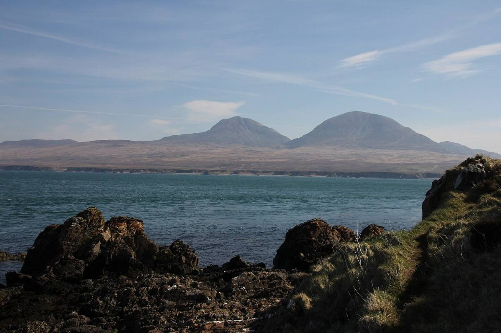

Bunnahabhain was built in 1881 by the Islay Distillery Company, a group that included William Robertson and the Greenlees brothers, and the first spirit ran in 1883. They built a whole village for the workers around it.
For its first eighty years the distillery depended on the sea. Barley, coal and casks came in by boat to its own pier, and the road to Port Askaig was only built in 1960.
Its stills are the tallest on Islay, with long swan necks that make a lighter spirit, and the water comes from a spring by the Margadale River. That's why most Bunnahabhain is unpeated, nutty and sherried. It also goes into the Black Bottle blend.
Don't miss: walk out along the pier after the tasting. The Paps of Jura sit right across the Sound, and it's the best photo of the day.
